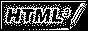

Hi there!
Welcome to my site! (^ w ^) Here's where you'll find my coding projects, links, and other stuff. Check out my GitHub for more programming stuff.




About me :3
Hi! I'm anna (shortened form of my username - NOT my real name), and I like to make stuff, especially cool websites. My pronouns are he/him (yes I like purple and pink cutesy things, so sue me) and I'm a high school student in New Zealand.My favourite things to build are retro-themed websites (like this one!), as well as games (which I never finish), and command line apps. I also love music, overthinking, and chemistry.
My regular tech stack is usually Tauri + Vanilla + TypeScript, plain Rust, or Godot + GDScript depending on the project. My main editor is Visual Studio Code (even though I hate it - it's really convenient), but I've been thinking of switching to NeoVim at some point.
Outside of programming, I'm a rock climber, volunteer lifeguard, saxophonist and guitar player. I also play field hockey and Minecraft (especially Superflat Survival!)
Projects
Key: 💡 Idea, 🔴 On hold, 🟢 Active- 🔴 USG (Untitled Sandbox Game) - a physics sandbox game somewhat inspired by GMod
- 🟢 This website - do I really need to explain this?
- 🟢 Fetchd - a simple and customisable system info grabber (like NeoFetch)
- 💡 Dahlia - a lightweight text / code editor